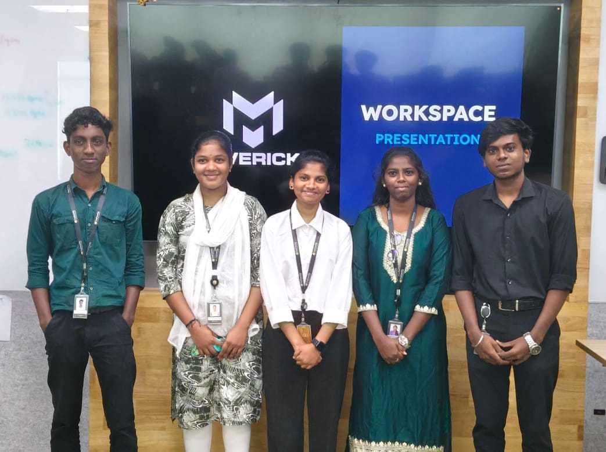
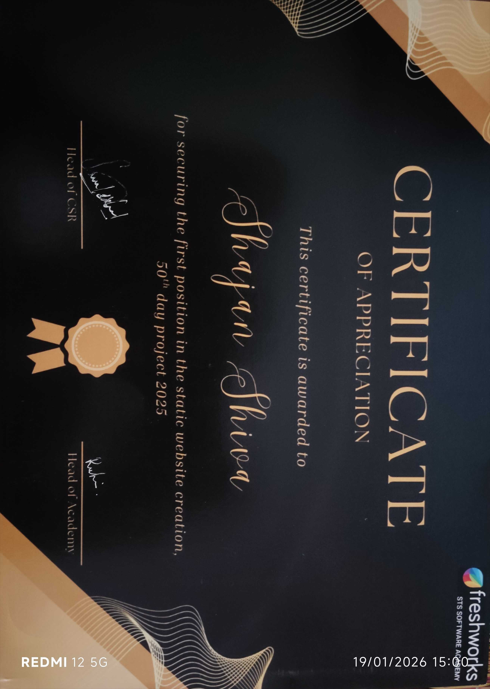

HTML
65%

I completed my 12th grade at St. Paul’s Matric Higher Secondary School. After finishing school, I joined Freshworks STS Software Academy, where I am currently studying and gaining hands-on experience in software development and modern web technologies. At the academy, I am learning problem-solving, core programming concepts, and full-stack development through practical projects. I enjoy building secure and meaningful applications, with a strong focus on user safety, privacy, and real-world impact.
65%
55%
50%
60%
65%
50%
60%
The product building challenge helped me strengthen my time management and teamwork abilities. I gained experience in task planning, resolving team challenges, coordinating with members, and collaborating effectively to achieve project objectives within deadlines.

As part of a workplace study, I explored LinkedIn and connected with professionals, which was a unique learning experience. This helped me enhance my professional communication, understand workplace networking practices, and build confidence in presenting myself and engaging with individuals from different backgrounds.

A full-stack platform designed to address workplace issues such as harassment, bullying, gender bias, and favoritism. It provides a safe space for users to share incidents publicly and raise awareness.

A static replica of the GT Holidays website built to practice frontend development, layout structuring, and responsive design. Implementation of complex grid layouts and responsive media queries.

Awarded by Freshworks STS Software Academy for securing 1st place in the Static Website Creation challenge during the 50th Day Project (2025). This achievement highlights my skills in HTML, CSS, responsive design, and my ability to deliver a well-structured, visually appealing static website within a given timeline.
